You are going to learn how to make a game, in which you’ll use the mouse to control a boat. You must try to get to the desert island, avoiding the wooden barriers. The white arrows boost your boat and make it go faster.
Start a new Scratch project, and delete the cat sprite so that your project is empty. You can find the online Scratch editor at jumpto.cc/scratch-new.
For this project, you should have a ‘Project Resources’ folder, containing all of the images you’ll need. Make sure that you can find this folder, and ask your club leader if you can’t find it.
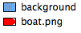screenshot
From this ‘Project Resources’ folder, import ‘background.png’ as the stage backdrop and ‘boat.png’ as a new sprite. If you don’t have these images you can draw them yourself!
Rename your sprite ‘Player 1’, shrink it slightly, and move it to the bottom of the stage.
Your project should look like this:
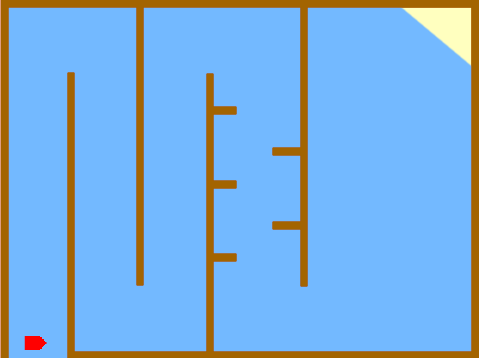screenshot
You are going to control the boat with your mouse. Add this code to your boat:
when flag clicked
point in direction (0 v)
go to x: (-215) y: (-160)
forever
point towards [mouse-pointer v]
move (1) steps
end
Test out your boat, by clicking the flag and moving the mouse. Does the boat sail towards the mouse?
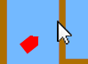screenshot
Have a look what happens when the boat reaches the mouse pointer.
To stop this happening, you’ll need to add an if block to your code, so that the boat only moves if it is more than 5 pixels away from the mouse.
when flag clicked
point in direction (0 v)
go to x: (-215) y: (-160)
forever
if < (distance to [mouse-pointer v]) > [5] > then
point towards [mouse-pointer v]
move (1) steps
end
end
Test out your boat again, to check whether the problem has been fixed.
Save your project
Step 2: Crashing!
Your boat can sail through the wooden barriers! Let’s fix that.
Activity Checklist
You’ll need 2 costumes for your boat, one normal costume, and one for when the boat crashes. Duplicate your boat costume, and name them ‘hit’ and ‘not hit’.
Click on your ‘hit’ costume, and choose the ‘Select’ tool to grab bits of the boat and move and rotate them around. Make your boat look as if it’s crashed.
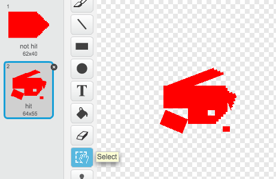screenshot
Add this code to your boat, inside the forever loop, so that it crashes when it touches any brown wooden barriers:
if <touching color [#A36400]?> then
switch costume to [hit v]
say [Noooooo!] for (1) secs
switch costume to [not hit v]
point in direction (0 v)
go to x: (-215) y: (-160)
end
This code is inside the forever loop, so that your code keeps checking if the boat has crashed.
You should also make sure that your boat always starts looking like it’s ‘not hit’.
Now if you try to sail through a wooden barrier, you should see that your boat crashes and moves back to the start.
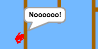screenshot
Save your project
Challenge: Winning!
Can you add another if statement to your boat’s code, so that the player wins when they get to the desert island?
When the boat gets to the yellow sand, it should say ‘YEAH!’ and then the game should stop. You’ll need to use this code:
say [YEAH!] for (1) secs
stop [all v]
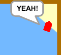screenshot
Save your project
Challenge: Sound effects
Can you add sound effects to your game, for when the boat crashes, or reaches the island at the end. You could even add background music (see the previous ‘Rock Band’ project if you need help with this).
Save your project
Step 4: Time Trial
Let’s add a timer to the game, so that the player has to get to the desert island as fast as possible.
Activity Checklist
Add a new variable called time to your stage. You can also change the display of your new variable. If you need help, have a look at the ‘Balloons’ project.
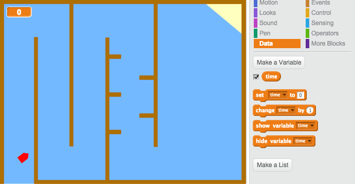screenshot
Add this code to your stage, so that the timer counts up until the boat reaches the desert island:
when flag clicked
set [time v] to [0]
forever
wait (0.1) secs
change [time v] by (0.1)
end
That’s it! Test out your game and see how quickly you can get to the desert island!
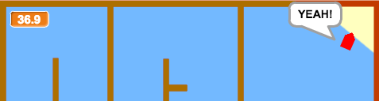screenshot
Save your project
Step 4: Obstacles and power-ups
This game is far too easy - let’s add things to make it more interesting.
Activity Checklist
First let’s add some ‘boosts’ to your game, which will speed up the boat. Edit your stage backdrop and add in some white booster arrows.
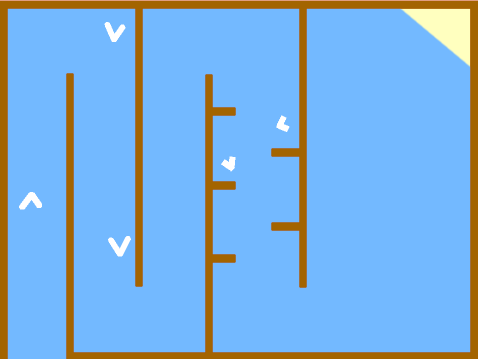screenshot
You can now add some code to your boat’s forever loop, so that it moves 2 extra steps when touching a white booster.
if <touching color [#FFFFFF]?> then
move (3) steps
end
You can also add in a spinning gate, which your boat has to avoid. Add in a new sprite called ‘Gate’, which looks like this:
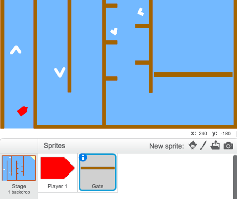screenshot
Make sure that the colour of the gate is the same as the other wooden barriers.
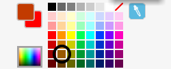screenshot
Set the center of the gate sprite.
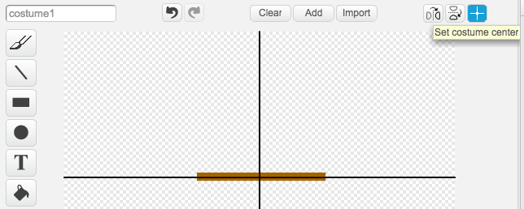screenshot
Add this code to your gate, to make it spin slowly:
when flag clicked
forever
turn right (1) degrees
end
Test out your game. You should now have a spinning gate that you must avoid.
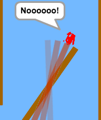screenshot
Save your project
Challenge: More obstacles!
Can you add more obstacles to your game? Here are some ideas to help you:
You could add more wood to your backdrop, to make your game more difficult.
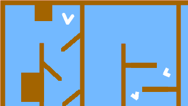screenshot
You could add green slime to your backdrop, which slows the player down when they touch it. You can use a wait block to do this:
wait (0.01) secs
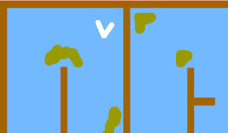screenshot
You could add a moving object, like a log or a shark! These blocks may help you:
move (1) steps
if on edge, bounce
If your new object isn’t brown, you’ll need to add to your boat code:
if < <touching color [#A36400]?> or <touching [shark v]?> > then
end
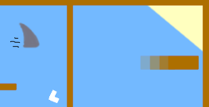screenshot
Save your project
Challenge: More boats!
Can you turn your game into a race between 2 players?
Duplicate the boat, rename it ‘Player 2’ and change its colour.
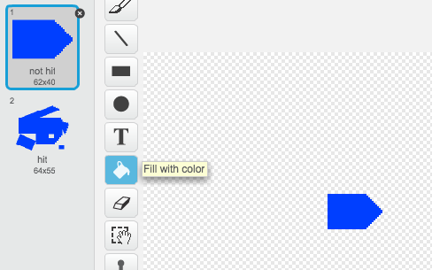screenshot
Change Player 2’s starting position, by changing this code:
go to x: (-215) y: (-160)
Delete the code that uses the mouse to control the boat:
if < (distance to [mouse-pointer v]) > [5] > then
point towards [mouse-pointer v]
move (1) steps
end
…and replace it with code to control the boat using the arrow keys.
This is the code you’ll need to move the boat forward:
if < key [up arrow v] pressed? > then
move (1) steps
end
You’ll also need code to turn the boat when the left and right arrow keys are pressed.
Save your project
Challenge: More levels!
Can you create additional backdrops, and allow the player to choose between levels?